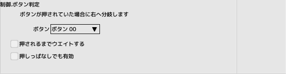

■元のページへ戻る
■元のページへ戻る
通過
- 何もしない制御パネルです
無限ウエイトという特殊機能があります
消滅
- 自キャラクタを消滅させます
破壊タスクは実行されません
ループ開始
一連の制御パネルを一定回数繰り返す時に使用します
- ループ番号
0～15を指定、同一番号のループ終了パネルとの間で繰り替え処理が行われます
- ループ回数
繰り返す回数(値or変数)
ループ終了
- ループ番号
0～15を指定、同一番号のループ開始パネルとの間で繰り替え処理が行われます
多重ループの際はループ番号の付け方に注意してください
条件分岐
- 比較対象
- PARAM_A,B
ステージ設定の出現テーブルで設定された値
- 分岐条件
比較対象と値が条件を満たしたときに右へ分岐します
そうでない場合はそのまま下へ抜けます
フラグ
- アトリビュートフラグ
キャラクタ編集で設定したフラグを一つ選択
- OFF
選択したアトリビュートフラグをONにします
- ON
選択したアトリビュートフラグのOFFにします
- 変数
選択したアトリビュートフラグを変数に取得もしくは設定します
方向と変数を指定します
アトリビュートフラグ「多関節キャラ」は変更できません
タスク開始
- タスク番号
0～15を指定
GATEの無いタスクは開始されません
継承スクリプト、デフォルトスクリプトの項目を参照
- 最初から開始する
チェック時は無条件にGATEから開始されます
非チェック時、タスクがすでに動作中は何もしません
非チェック時、タスクが一時停止していた場合、その場から再開されます
タスク終了
- タスク番号
0～15を指定
指定したタスクを一時停止させます
一時停止から再会した場合、次のパネルから実行されます
信号送信
- 送信先
- 自分
常に有効
- 親
親が居ない場合は無効
- 子
子IDで対象の子を選択、居ない場合は無効
- 関節（子）
キャラクタ編集で多関節タブで節に付与したオプションキャラクタ。全関節が対象
- 子ID
送信先が子の場合の対象
- シグナル番号
SIGNAL_00～SIGNAL_15を指定
- 送信モード
そのまま送信するか、送信先と演算を行うか選択
- 送信データ
変数の内容を送信するのか値を送信するのか選択
信号受信
受信済みの信号内容と比較を行い条件分岐する
- シグナルを受信するまでウエイトする
一度もシグナルを受信していない場合、このパネルで待ち続ける
- シグナル番号
SIGNAL_00～SIGNAL_15を指定
- 分岐条件
シグナル値と(値or変数)が条件を満たしたときに右へ分岐します
そうでない場合はそのまま下へ抜けます
シグナルを一度でも受信したかどうかのフラグは「信号クリア」パネルでリセットされる
信号クリア
シグナルを一度でも受信したかどうかのフラグをリセットする
また、受信シグナル値が0クリアされます(選択可)
- すべてのシグナルをクリアする
チェック時SIGNAL_00～SIGNAL_15すべてが対象となる
- 受信データを0にしない
チェック時、受信シグナル値には何もしない
- シグナル番号
SIGNAL_00～SIGNAL_15を指定
メニュー
簡易プレイヤー選択用メニュー
簡易メニューの作り方
- システム選択
プレイヤー選択を選んでください
- 各種効果音
動作時の効果音を選択してください
- キャンセル可
Bボタンでキャンセル可能になります
- 左右で選択
上下で選択するか左右で選択するか
表示優先
- 表示優先
ステージ編集・優先リスト上のどのレイヤーに表示するかを選択します
- Z値オフセット
キャラクタ編集のZ値オフセットを変更します(値or変数)
体力
- 残り体力が指定された割合を下回る(イコールを含む)と右へ分岐する
0～100%で指定、小数点以下切り捨て
- 分岐するまで無期限でウエイト
非チェック時は下へ抜けます
アイテム
アイテムキャラクタを作成時に時間で内容を切り替える時に使用されます

ボタン判定
- ボタン
なしを選択すると常に非成立になります
- 押されるまでウエイトする
非チェック時は下へ抜けます
- トリガー
ボタンを押した瞬間を判定します
- プレス
ボタンを押している間を判定します
- リピート
リピート間隔は初期8フレーム、継続4フレーム
ステージ遷移
- 次のステージを登録する
メインステージ以外は無視されます
指定が無い場合はメインステージ内の次の項目が選ばれます
- 今すぐ遷移
非チェック時はステージクリア時に遷移
その他
- 破壊
HPが0になって破壊されたのと同じ状態になります。破壊タスクも起動します
- アプリ終了
テストプレイ中は無効
- タイトルへ遷移する
現シーンを終了し、タイトルへ遷移する
- プレイヤー選択へ遷移する
現シーンを終了し、プレイヤー選択へ遷移する
- オープニングへ遷移する
現シーンを終了し、オープニングへ遷移する
- エンディングへ遷移する
現シーンを終了し、オープニングへ遷移する
- ランキングへ遷移する
現シーンを終了し、ランキングへ遷移する
- メインステージへ遷移する
現シーンを終了し、メインステージの先頭へ遷移する
- オートデモへ遷移する
現シーンを終了し、オートデモへ遷移する
- ランキング画面 カーソル↓
ランキング時のカーソルを移動
- ランキング画面 カーソル↑
ランキング時のカーソルを移動
- ランキング画面 ページ送り
ランキング時のページを切り替え
- ランキング画面 ページ戻り
ランキング時のページを切り替え
- ランキング画面 タイプ送り
ランキング時の自機タイプを切り替え
- ランキング画面 タイプ戻り
ランキング時の自機タイプを切り替え
- ランキング画面 リプレイ実行
カーソル位置のリプレイを実行する
シーン遷移系に関して
リプレイ記録は破棄されます
リプレイ再生中、オートデモ中は無視されます
リプレイを継続させたい場合はステージ遷移コマンドを使用してください
振動
パッドの振動モーターを制御します
- モーター0
変化させる場合チェックします。強さ(0-100)
- モーター1
変化させる場合チェックします。強さ(0-100)
- フェードフレーム
設定値へ到達するフレーム数
- トータルフレーム
振動させる全体のフレーム数
注意
パッドによって振動の強さや性質は異なります
■ページ上部へ戻る